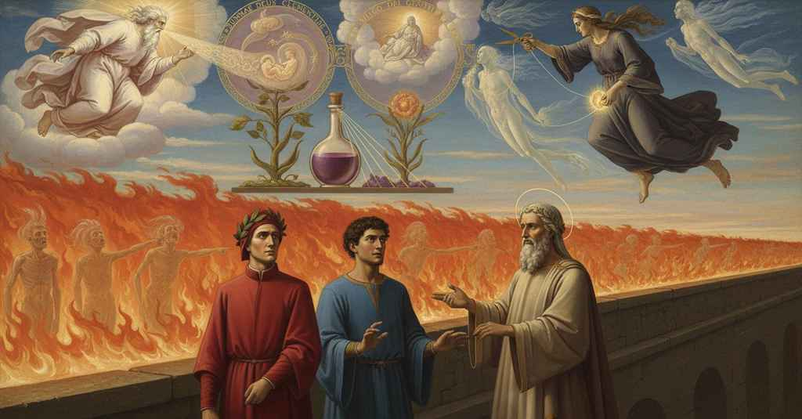

Purgatorio — Canto 25

1
Ora era onde ’l salir non volea storpio;
Now was the hour when the climb wished for no delay;
今は、登ることが遅滞を許さぬ時であった。
2
ché ’l sole avëa il cerchio di merigge
for the sun had left the meridian circle
なぜなら太陽は真昼の円を
3
lasciato al Tauro e la notte a lo Scorpio:
to Taurus and the night to Scorpio:
牡牛座に残し、夜は蠍座に残していたからだ。
4
per che, come fa l’uom che non s’affigge
wherefore, as a man does who does not stop
それゆえ、立ち止まらぬ人のように、
5
ma vassi a la via sua, che che li appaia,
but goes on his way, whatever appears to him,
だが何が現れようと、自分の道を行く、
6
se di bisogno stimolo il trafigge,
if the spur of need pierces him,
もし必要の棘が彼を突き動かすならば。
7
così intrammo noi per la callaia,
so we entered through the narrow pass,
そのように我らは狭い道へと入り、
8
uno innanzi altro prendendo la scala
one before the other taking the stair
一人また一人と階段を上った、
9
che per artezza i salitor dispaia.
that for its narrowness un-pairs the climbers.
その狭さゆえに登る者たちを一人ずつにする階段を。
10
E quale il cicognin che leva l’ala
And like the little stork that lifts its wing
そして巣立ちを望んで翼を広げるが、
11
per voglia di volare, e non s’attenta
with the desire to fly, and does not dare
飛び立つ勇気はなく、
12
d’abbandonar lo nido, e giù la cala;
to abandon the nest, and lets it fall again;
巣を離れられず、また翼を降ろす小鶴のように、
13
tal era io con voglia accesa e spenta
such was I with a desire kindled and quenched
そのような私であった、問いかけたいという思いが燃えたり消えたりして、
14
di dimandar, venendo infino a l’atto
to ask, coming up to the very act
ついには身振りにまでなりながら、
15
che fa colui ch’a dicer s’argomenta.
that he makes who prepares himself to speak.
まさに語り出そうとする者がする身振りに。
16
Non lasciò, per l’andar che fosse ratto,
He did not let it pass, though the going was swift,
歩みは速かったが、私の優しい父はそれを放置せず、
17
lo dolce padre mio, ma disse: «Scocca
my sweet father, but said: “Shoot
言った、「放て
18
l’arco del dir, che ’nfino al ferro hai tratto».
the bow of speech, which you have drawn to the iron.”
鉄の鏃まで引き絞った、言葉の弓を」。
19
Allor sicuramente apri’ la bocca
Then I confidently opened my mouth
そこで私は安心して口を開き、
20
e cominciai: «Come si può far magro
and began: “How can one become lean
語り始めた、「どうして痩せることができるのですか、
21
là dove l’uopo di nodrir non tocca?».
there where the need for nourishment does not touch?”
養いを摂る必要が及ばぬ場所で？」。
22
«Se t’ammentassi come Meleagro
“If you would recall how Meleager
「もしお前がメレアグロスがどのように
23
si consumò al consumar d’un stizzo,
was consumed as a firebrand was consumed,
一本の燃え木が燃え尽きると共に身を滅ぼしたかを思い出せば、
24
non fora», disse, «a te questo sì agro;
this would not be,” he said, “for you so harsh;
この問いも」、彼は言った、「それほど難しくはあるまい。
25
e se pensassi come, al vostro guizzo,
and if you thought how, at your flicker,
そしてもし、お前たちの動きに応じて、
26
guizza dentro a lo specchio vostra image,
your image flickers inside the mirror,
鏡の中でお前たちの姿が動くことを考えれば、
27
ciò che par duro ti parrebbe vizzo.
what seems hard would seem to you flimsy.
難しく見えることも、お前にはたやすく思えるだろう。
28
Ma perché dentro a tuo voler t’adage,
But so that you may rest easy in your desire,
しかし、お前の望みを満たして安心させるために、
29
ecco qui Stazio; e io lui chiamo e prego
here is Statius; and I call him and pray
ここにスタティウスがいる。彼に呼びかけ、願おう、
30
che sia or sanator de le tue piage».
that he be now the healer of your wounds.”
今、お前の傷の癒し手となるよう」。
31
«Se la veduta etterna li dislego»,
“If I unfold to him the eternal view,”
「もし私が永遠の光景を彼に解き明かすなら」、
32
rispuose Stazio, «là dove tu sie,
replied Statius, “in your presence,
スタティウスは答えた、「あなたがそこにいるというのに、
33
discolpi me non potert’ io far nego».
let my inability to refuse you be my excuse.”
お断りできない私をお許しください」。
34
Poi cominciò: «Se le parole mie,
Then he began: “If my words, my son,
やがて彼は語り始めた。「我が言葉を、
35
figlio, la mente tua guarda e riceve,
your mind watches and receives,
息子よ、そなたの心が注視し、受け入れるならば、
36
lume ti fiero al come che tu die.
light I will make for you on the ‘how’ that you ask.
そなたが発した『いかにして』という問いに光を当てよう。
37
Sangue perfetto, che poi non si beve
Perfect blood, which is not drunk
完全なる血は、その後、飲まれることなく
38
da l’assetate vene, e si rimane
by the thirsty veins, and which remains
渇いた脈管から、そして残るのだ、
39
quasi alimento che di mensa leve,
like nourishment that you remove from the table,
食卓から片付ける食べ物のように。
40
prende nel core a tutte membra umane
takes in the heart for all human members
それは心臓において、あらゆる人の四肢へと
41
virtute informativa, come quello
an informative virtue, like that blood
形成力を帯びる、あたかも
42
ch’a farsi quelle per le vene vane.
which goes to make them through the flowing veins.
空なる脈管を通って、それらを形成する血のように。
43
Ancor digesto, scende ov’ è più bello
Digested yet again, it descends to where it is more beautiful
さらに消化され、そこへと下る、語るよりは
44
tacer che dire; e quindi poscia geme
to be silent than to speak; and from there it then distills
沈黙するが美しき場所へ。そしてそこから後に、滴り落ちる
45
sovr’ altrui sangue in natural vasello.
over another’s blood in the natural vessel.
他者の血の上へ、自然の器の中へ。
46
Ivi s’accoglie l’uno e l’altro insieme,
There the one and the other are joined together,
そこで両者は一つに集められ、
47
l’un disposto a patire, e l’altro a fare
the one disposed to be passive, the other to be active
一方は受動的に、他方は能動的に備え、
48
per lo perfetto loco onde si preme;
because of the perfect place from which it is pressed;
それが押し出された完璧な場所ゆえに。
49
e, giunto lui, comincia ad operare
and, having reached it, it begins to operate,
そして、それ（能動的な血）が着くと、働き始める、
50
coagulando prima, e poi avviva
first coagulating, and then giving life to
まず凝固させ、次に生命を与えながら、
51
ciò che per sua matera fé constare.
that which for its matter it made solid.
自らの質料として定めたものに。
52
Anima fatta la virtute attiva
The active virtue having become a soul
能動的な力は魂となり、
53
qual d’una pianta, in tanto differente,
like that of a plant, different in this:
植物の魂のごとく、しかしこれほど異なっている、
54
che questa è in via e quella è già a riva,
that this one is on its way and that one is already at the shore,
こちらは途上にあり、あちらはすでに岸に着いている、という点で。
55
tanto ovra poi, che già si move e sente,
it then works so far that it now moves and feels,
やがてそれは、すでに動き、感じるほどに働き、
56
come spungo marino; e indi imprende
like a sea-sponge; and from there it undertakes
海綿のように。そしてそこから始めるのだ、
57
ad organar le posse ond’ è semente.
to organize the powers of which it is the seed.
自らが種である諸能力を器官化することを。
58
Or si spiega, figliuolo, or si distende
Now unfolds, my son, now extends
さて、息子よ、今や広がり、伸びていく、
59
la virtù ch’è dal cor del generante,
the virtue that comes from the begetter’s heart,
生み出す者の心臓からの力が。
60
dove natura a tutte membra intende.
where nature intends for all the members.
そこでは自然があらゆる肢体を意図している。
61
Ma come d’animal divegna fante,
But how from an animal it becomes a speaker,
しかし動物からいかにして人間になるか、
62
non vedi tu ancor: quest’ è tal punto,
you do not see yet: this is a point
そなたはまだ見ていない。これはそのような点なのだ、
63
che più savio di te fé già errante,
that made one wiser than you err in the past,
そなたより賢き者をもかつて迷わせたほどに。
64
sì che per sua dottrina fé disgiunto
so that in his doctrine he made separate
その結果、彼はその教えによって分離させた、
65
da l’anima il possibile intelletto,
from the soul the possible intellect,
魂から可能なる知性を。
66
perché da lui non vide organo assunto.
because he saw no organ assumed by it.
なぜなら、それによって占められる器官を見なかったからだ。
67
Apri a la verità che viene il petto;
Open your breast to the truth that is coming;
来たるべき真理に胸を開け。
68
e sappi che, sì tosto come al feto
and know that, as soon as in the fetus
そして知るがよい、胎児において
69
l’articular del cerebro è perfetto,
the articulation of the brain is perfect,
脳の分節が完璧になるとすぐに、
70
lo motor primo a lui si volge lieto
the First Mover turns to it with joy
第一の動者は喜んで彼の方を向き、
71
sovra tant’ arte di natura, e spira
over such great art of nature, and breathes
自然のこれほどの術の上に、そして吹き込むのだ、
72
spirito novo, di vertù repleto,
a new spirit, replete with virtue,
新たなる霊を、力に満ちたものを。
73
che ciò che trova attivo quivi, tira
which pulls what it finds active there
それは、そこで活動しているものを見つけると、引き寄せ、
74
in sua sustanzia, e fassi un’alma sola,
into its own substance, and becomes a single soul,
自らの実体へと、そして一つの魂となる、
75
che vive e sente e sé in sé rigira.
that lives and feels and on itself revolves.
それは生き、感じ、自らの内で自らを省みる。
76
E perché meno ammiri la parola,
And so that you may marvel less at my word,
そしてこの言葉にそれほど驚かぬよう、
77
guarda il calor del sole che si fa vino,
look at the sun’s heat that becomes wine,
太陽の熱が葡萄酒となるのを見よ、
78
giunto a l’omor che de la vite cola.
when joined to the humor that drips from the vine.
葡萄の木から滴る汁に合わさって。
79
Quando Làchesis non ha più del lino,
When Lachesis no longer has the thread,
ラケシスがもはや亜麻を持たぬ時、
80
solvesi da la carne, e in virtute
it is loosed from the flesh, and in potential
魂は肉体から解き放たれ、その力のうちに
81
ne porta seco e l’umano e ’l divino:
it carries with it both the human and the divine:
人間的なものと神的なものを共に運び去る。
82
l’altre potenze tutte quante mute;
the other powers all of them are mute;
他のすべての能力は沈黙し、
83
memoria, intelligenza e volontade
memory, intelligence, and will
記憶、知性、そして意志は
84
in atto molto più che prima agute.
in act much sharper than before.
以前よりも遥かに鋭敏に働く。
85
Sanza restarsi, per sé stessa cade
Without resting, by itself it falls
留まることなく、自ずと落下し
86
mirabilmente a l’una de le rive;
wondrously to one of the shores;
いずれかの岸辺へと不思議にも至る。
87
quivi conosce prima le sue strade.
there it first learns its destined paths.
そこで初めて自らの道を知るのだ。
88
Tosto che loco lì la circunscrive,
As soon as a place there circumscribes it,
そこにある場所が魂を囲むやいなや、
89
la virtù formativa raggia intorno
the formative power radiates around
形成の力はあたりに放射する、
90
così e quanto ne le membra vive.
just as and as much as in the living limbs.
生ける四肢にあったのと同様に、また同程度に。
91
E come l’aere, quand’ è ben pïorno,
And as the air, when it is quite damp,
そして、大気が、十分に湿っている時に、
92
per l’altrui raggio che ’n sé si reflette,
through another’s ray that is reflected in it,
他からの光がその内に反射して、
93
di diversi color diventa addorno;
becomes adorned with different colors;
様々な色に飾られるように、
94
così l’aere vicin quivi si mette
so the neighboring air there is impressed
そのようにここの近くの大気は自らを置き、
95
e in quella forma ch’è in lui suggella
into that form which is sealed in it
そして、そこに留まった魂が
96
virtüalmente l’alma che ristette;
virtually by the soul that has come to rest;
その力によって刻印した姿となる。
97
e simigliante poi a la fiammella
and then, like the small flame
そしてその後は、小さな炎が
98
che segue il foco là ’vunque si muta,
that follows the fire wherever it moves,
火がどこへ動こうともそれに従うように、
99
segue lo spirto sua forma novella.
its new form follows the spirit.
霊にはその新しい姿が付き従う。
100
Però che quindi ha poscia sua paruta,
Because from this it then has its appearance,
これによって、その後その見かけを持つので、
101
è chiamata ombra; e quindi organa poi
it is called a shade; and from this it then forms organs
それは影と呼ばれ、そしてそれによって器官を
102
ciascun sentire infino a la veduta.
for every sense, all the way to sight.
視覚に至るまでのあらゆる感覚のために形成する。
103
Quindi parliamo e quindi ridiam noi;
From this we speak and from this we laugh;
これによって我々は語り、笑うのだ。
104
quindi facciam le lagrime e ’ sospiri
from this we make the tears and the sighs
これによって我々は涙を流し、溜息をつく、
105
che per lo monte aver sentiti puoi.
that you may have heard throughout the mountain.
そなたがこの山で聞いてきたであろうものを。
106
Secondo che ci affliggono i disiri
According to how desires and other feelings
我々を苛む欲望や
107
e li altri affetti, l’ombra si figura;
afflict us, the shade takes its form;
その他の情念に応じて、影は形作られる。
108
e quest’ è la cagion di che tu miri».
and this is the reason for what you marvel at».
そしてこれこそが、そなたが驚いていることの原因なのだ」。
109
E già venuto a l’ultima tortura
And already come to the last torture
そしてすでに我々は最後の苦行の場に着き、
110
s’era per noi, e vòlto a la man destra,
had we, and turned to the right hand,
右手へと向きを変え、
111
ed eravamo attenti ad altra cura.
and we were attentive to another care.
我らは別の配慮に心を向けていた。
112
Quivi la ripa fiamma in fuor balestra,
Here the bank shoots flame outward,
ここでは崖が外へと炎を射かけ、
113
e la cornice spira fiato in suso
and the terrace breathes a wind upward
そして環道は上へと風を吹き上げ、
114
che la reflette e via da lei sequestra;
that reflects it and keeps it separate from itself;
それを押し返し、道から遠ざけていた。
115
ond’ ir ne convenia dal lato schiuso
so we had to go on the open side
それゆえ我らは開かれた側を
116
ad uno ad uno; e io temëa ’l foco
one by one; and I feared the fire
一人ずつ進まねばならなかった。そして私は炎を恐れ、
117
quinci, e quindi temeva cader giuso.
on this side, and on that feared to fall below.
こちら側では、そしてあちら側では下に落ちることを恐れた。
118
Lo duca mio dicea: «Per questo loco
My leader said: “Through this place
我が導き手は言った、「この場所では
119
si vuol tenere a li occhi stretto il freno,
one must keep a tight rein on the eyes,
目に固く手綱を締めておかねばならぬ、
120
però ch’errar potrebbesi per poco».
because one could go astray for very little.”
というのも、僅かなことで道を踏み外しうるからだ」。
121
‘Summae Deus clementïae’ nel seno
‘Summae Deus clementiae’ in the heart
「至高の憐れみの神よ」と、その大いなる熱気の
122
al grande ardore allora udi’ cantando,
of the great burning I then heard being sung,
中心で歌うのをその時私は聞いたが、
123
che di volger mi fé caler non meno;
which made me no less eager to turn;
それは振り向きたいという私の思いを少しも減じはしなかった。
124
e vidi spirti per la fiamma andando;
and I saw spirits walking through the flame;
そして私は炎の中を行く霊たちを見た。
125
per ch’io guardava a loro e a’ miei passi
for which I looked at them and at my steps,
そのため私は彼らと我が足元に目をやり、
126
compartendo la vista a quando a quando.
dividing my sight from time to time.
時折、視線を分けていた。
127
Appresso il fine ch’a quell’ inno fassi,
After the end that is made to that hymn,
その聖歌が終わった後、
128
gridavano alto: ‘Virum non cognosco’;
they cried out loud: ‘Virum non cognosco’;
彼らは高く叫んだ、「我は男を知らず」。
129
indi ricominciavan l’inno bassi.
then they began the hymn again softly.
それから低く聖歌を再び始めた。
130
Finitolo, anco gridavano: «Al bosco
Having finished it, they cried again: “To the woods
それを終えると、また叫んだ、「森に
131
si tenne Diana, ed Elice caccionne
Diana kept, and she drove out Helice
ディアナは留まり、ヘリケーを追放した、
132
che di Venere avea sentito il tòsco».
who had felt the poison of Venus.”
彼女はウェヌスの毒を感じていたからだ」。
133
Indi al cantar tornavano; indi donne
Then to their song they returned; then women
それから歌に戻り、それから貞淑であった
134
gridavano e mariti che fuor casti
they cried, and husbands, who were chaste
妻たちや夫たちの名を叫んだ、
135
come virtute e matrimonio imponne.
as virtue and matrimony impose.
美徳と婚姻が命じるように。
136
E questo modo credo che lor basti
And this method I believe is enough for them
そしてこの方法が彼らにとって十分なのだと私は思う、
137
per tutto il tempo che ’l foco li abbruscia:
for all the time that the fire burns them:
炎が彼らを焼く間ずっと。
138
con tal cura conviene e con tai pasti
with such treatment and with such sustenance
このような配慮とこのような糧をもって
139
che la piaga da sezzo si ricuscia.
the final wound must be stitched up.
最後の傷が再び縫われる必要があるのだ。